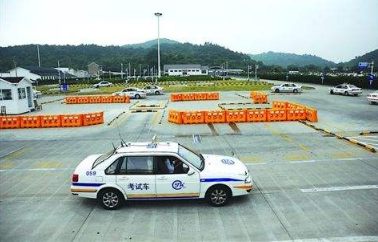
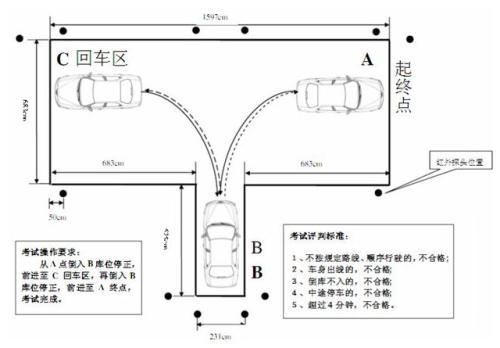
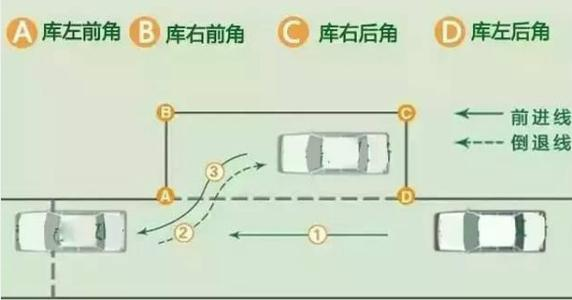
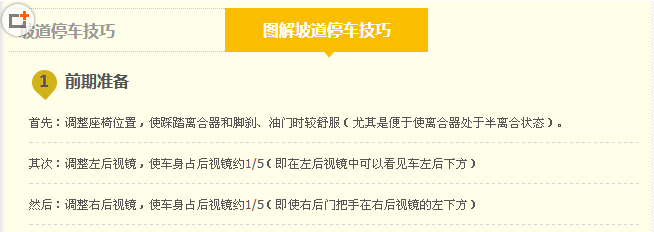
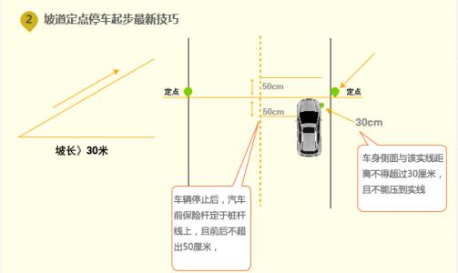
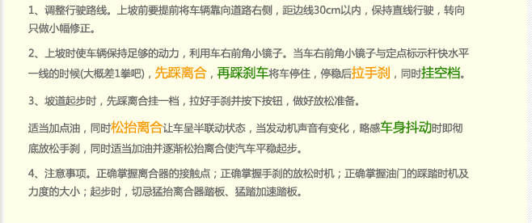
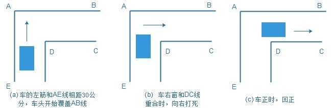
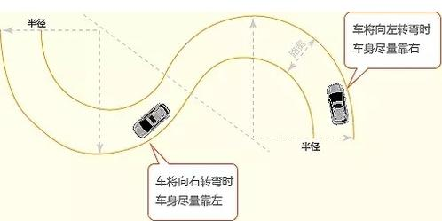

科目二考试规则及流程(场地驾驶技能)
考试时有两次机会，要求每次机会五个项目都要合格，如果有一项不合格，则五个项目都要重考。
如果第一次机会考试不合格，接着就进行第二次考试，考试流程跟第一次相同，而且是同一辆车、同一条考道，须重新验证指纹。
考生考试结束后，必须迅速离场，不得妨碍和指挥他人考试，从出口离开考场，然后带上签到号到成绩打印窗口打印成绩单。

科目二考试:
一、倒车入库是2013年后考取小型汽车驾照必须进行的一个项目。考察驾驶人在场地操作汽车的能力。倒车入库是驾驶员考试中的一个考核点。即在运动中操纵车辆从两侧正确倒入车库。

二、侧方位停车是驾照考试科目二的一项内容。侧方位停车是在城市中越来越多见的情况，特别是在正规停车场车位逾见紧张时，很多地方都将原有的街道两旁划成停车位，成为“侧向停车位”。

以前的侧方停车，是用四根标杆立在地上，象征车库的四个角。车辆是否顺利进库停车，有没有碰到这四根标杆是标准之一。新交规实施后，侧方停车不再有标杆，全部采用地上标线的形式做车库边界。学C1驾照的学员，侧方停车的车位长度是车辆长度的1.5倍加1米。将车辆开至与前进方向平行的车库前方，然后向右后方倒车入库，中间不能有任何停顿，只要在这个范围内侧方停车入库没过库位边线的，都算通过。
三、坡道定点停车和起步是驾驶员考试中科目二的一个考核点。考试要求：要求在≥10%坡度，≥30米坡长的坡道上的固定位置停车，考察方向、制动、离合器三者的协调配合。目的是为了培养机动车驾驶人准确判断车辆的位置，正确使用制动、档位和离合器，以适应在上坡路段停车与起步需要。



四、直角转弯是驾驶员考试中科目二的一个考核点，考核机动车驾驶人在急变路段驾驶车辆时，正确操纵转向、准确判断车辆内、外轮差的能力。挂一挡、松手刹、缓抬离合保持半联动匀速前行，保持汽车左侧雨刮左边圆点（第一个铆钉）与道路右侧边缘黄线间隔二十厘米距离前行，然后看汽车前面左侧车门中间门锁前面一点点切记此点。

五、曲线行驶是驾驶员考试中科目二的一个考核点，俗称S弯。考试要求车辆在规定宽度的S型路面上行驶，不得挤压路边缘线，方向运用自如。 考核的是机动车驾驶人操纵转向、控制车辆曲线行驶的能力。目的是为了培养机动车驾驶人转向的运用及对车轮轨迹运行的掌握技能。
